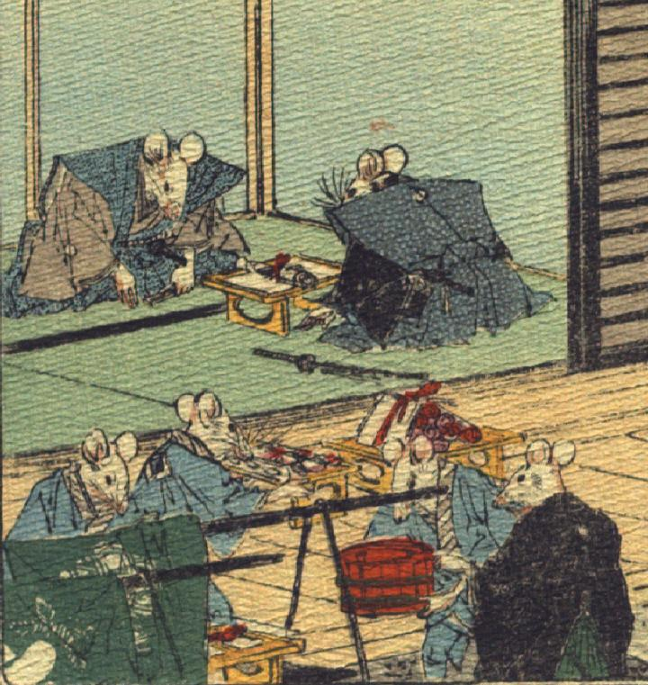

結納の場面。座敷では裃を着た2体の鼠が挨拶をかわしている。庭には、結納の品が次々と運ばれてきている。水色の羽織をまとった鼠たちがそれらを運び、黒い着物に緑の袴を着た鼠が、指図をしている。
著作者：J.Dautremer／出典：親書誌：U426_nichibunken_0111：Le mariage de la souris／日付：2006／資源識別子：U426_nichibunken_0111_0004_0000
Copyright (c)2010- International Research Center for Japanese Studies, Kyoto, Japan. All rights reserved.